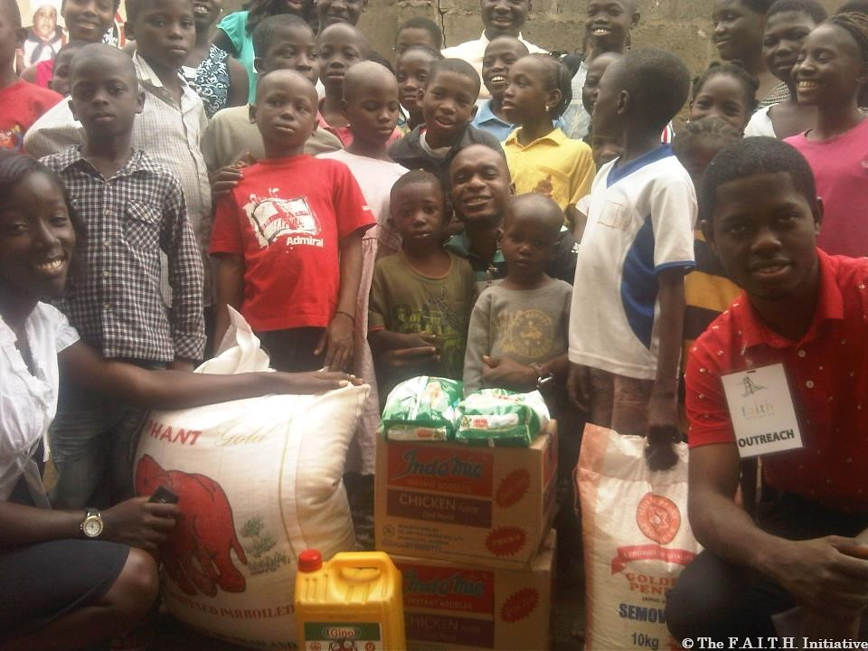

What we do at jesus children mission outreach
- orphanage support:to provide food,shelter, education and healthcare to orphaned children
- education initiative: offer scholarships, school supplies,and
literacy programs for underprivilleged children.
- healthcare services: provide medical care , vaccinations,and health education to children and family
- counseling and mentorship: provide emotional support, guidance, and mentorship to vulnerable children.
- Girls child empowerment: they are concerned with the training of the girl child
- Widow empowerment: According to the JCMO founder, as a result of the current economic situation in the country, the NGO was only able to empower 70 widows in its August widows outreach with cash as against the normal business starter packs.
Glo
“It has been so terrible. We were supposed to do skills acquisition but because of the system, I said let’s give them money. I know it’s going to be tougher for them because men and women who are members of the family, it has been very difficult for them,” she said.
She urged the widows to trust in God with determination, saying He would send helpers to them. She also cited her case as a widow for 24 years.
